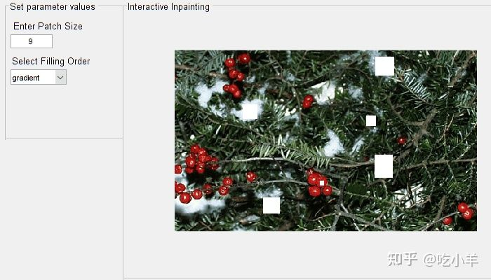
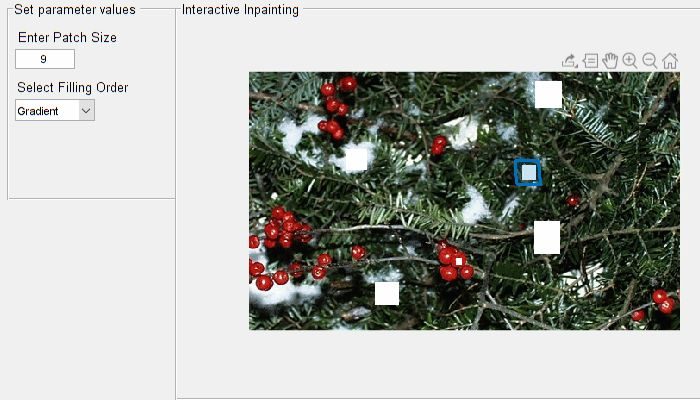

Home
此示例显示了如何交互地选择图像区域，以及如何使用基于示例的匹配方法对所选区域进行修补。交互式修复允许您多次选择一个区域并迭代执行修复以获得所需的结果。
在本例中，您通过以下方式执行区域填充和对象移除：
交互式选择修复区域
动态更新参数值
动态可视化结果
将图像读入工作区
读取图像以修复到工作区。该图像缺少要通过修复填充的图像区域。
I = imread( 'greensdistorted.png' );
创建交互式图形窗口
创建一个交互式图形窗口来显示要修复的图像。在窗口中，您可以选择感兴趣区域（ROI），并动态更新参数值。
h = figure('Name','Interactive Image Inpainting','Position',[0,0,700,400]);
% Create a panel in the current figure to interactively set the parameter
% values.
dataPanel = uipanel(h,'Position',[0.01 0.5 0.25 0.5],'Title','Set parameter values','FontSize',10);
% Add an user control interface for specifying the patch size.
% Set the default patch size value to 9.
uicontrol(dataPanel,'Style','text','String','Enter Patch Size','FontSize',10,'Position',[1 150 120 20]);
data.patchSize = uicontrol(dataPanel,'Style','edit','String',num2str(9),'Position',[7 130 60 20]);
% Add an user control interface for selecting the fill order.
% Set the default fill order to gradient.
uicontrol(dataPanel,'Style','text','String','Select Filling Order','FontSize',10,'Position',[5 100 120 20]);
data.fillOrder = uicontrol(dataPanel,'Style','popupmenu','String',{'gradient','tensor'},'Position',[7 80 80 20]);
% Create a panel in the current figure to display the image.
viewPanel = uipanel(h,'Position',[0.25 0 0.8 1],'Title','Interactive Inpainting','FontSize',10);
ax = axes(viewPanel);
在交互式图形窗口中显示图像。
hImage = imshow(I, 'Parent' ,ax);
以交互方式选择和修复图像区域
使用回调函数clickCallback，以交互方式选择 ROI 并动态修复选定的 ROI。分配一个函数句柄，该函数句柄将引用函数clickCallback到ButtonDownFcn图像对象的属性。
hImage.ButtonDownFcn = @(hImage,eventdata)clickCallback(hImage,eventdata,data);

请按照以下步骤交互式地修复图像。
步骤1：选择修补程序的补丁大小和填充顺序。要使用局部参数值进行修复，请使用交互式图形窗口中的用户控件将补丁大小和填充顺序修改为所需的值。
补丁大小和填充顺序的选择影响修复的质量，它们的最佳值取决于要修复的图像区域的特征。
默认补丁大小值设置为 9。
要使用常规纹理修复区域， 请选择更大的补丁大小并实现无缝修复要修复相对于小邻域局部均匀的区域，请选择较小的补丁大小
默认填充顺序设置为“ gradient”。您可以选择基于“ gradient”或“ tensor”的填充顺序来修复图像区域。但是，基于“tensor”的填充顺序更适合修复具有线性结构和规则纹理的图像区域。
第2步：使用鼠标以交互方式创建手绘ROI。将指针放在轴上并单击并拖动以绘制 ROI 形状。释放指针以关闭形状。
该函数使用用户控制界面动态更新指定的参数值，并修复选定的 ROI。重复步骤 1 和 2，以修复图像中的所有所需区域。

创建回调函数以选择和修复 ROI
创建回调函数clickCallback，与ButtonDownFcn交互式选择和修复 ROI 一起使用。
function clickCallback(src,~,data)
% Get the parameter values for inpainting.
fillOrder = data.fillOrder.String{data.fillOrder.Value};
pSize = data.patchSize.String;
patchSize = str2double(pSize);
% Select and draw freehand ROI.
h = drawfreehand('Parent',src.Parent);
% Create a binary mask of the selected ROI.
mask = h.createMask(src.CData);
% Run exemplar-based inpainting algorithm with user given parameters.
newImage = inpaintExemplar(src.CData,mask,'PatchSize',patchSize,'FillOrder',fillOrder);
% Update input image with output.
src.CData = newImage;
% Delete ROI handle.
delete(h);
end
======================================================================
我的测试结果及程序
下面是我测试的代码：

注：本文根据MATLAB官网内容修改而成。